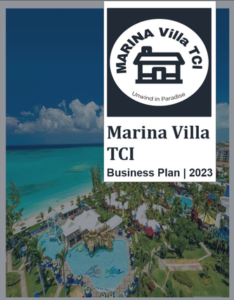

Marina Villa TCI
Vacation-rental development plan for a fictionalised Turks and Caicos concept.

Portfolio disclosure
This is a portfolio sample adapted from prior vacation-rental business-planning work. Identifying and client-specific details have been replaced. Financial projections, market assumptions, and operating strategies are illustrative and are not presented as the financials or advice of an active business.
Project context
Marina Villa TCI presents a vacation-rental concept involving the construction of one villa and the renovation of another for short-term stays. The case study demonstrates how a business plan can bring market positioning, operational planning, and financial structure into one decision-ready document.
Planning objective
The work was structured to clarify the concept, articulate its target market, identify the operating model, and organise the assumptions needed for an investment and funding discussion. The public version focuses on the planning approach and professional deliverables rather than sensitive source material.
Scope of work
Business and market planning
- Company, concept, mission, and positioning.
- Market research, segmentation, and target-customer framing.
- Competitive context and differentiated guest experience.
- Marketing objectives, promotional approach, and pricing structure.
Operating and financial structure
- Operating procedures, quality assurance, and technology needs.
- Management roles and organisational structure.
- Funding assumptions, projected statements, and break-even framework.
- Supporting schedules for cash flow and operating expenses.
What this sample demonstrates
The project shows the ability to translate a broad business idea into a structured plan that is easier for founders, partners, or prospective funders to review. It combines research, business writing, modelling structure, and clear documentation without presenting illustrative figures as verified performance.
Public portfolio approach
The original working file remains a private source document. This page provides an overview suitable for a public portfolio; it does not publish sensitive source files, private client data, or a downloadable investment document.